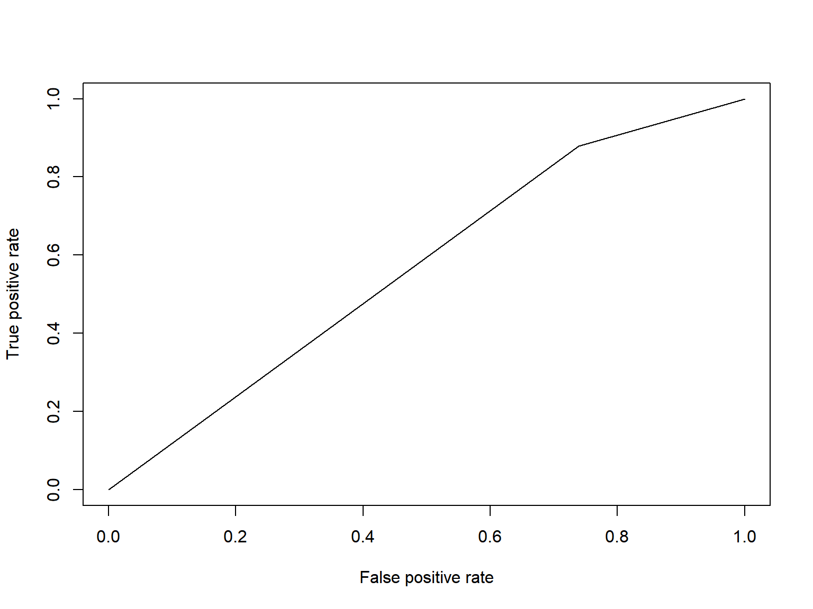
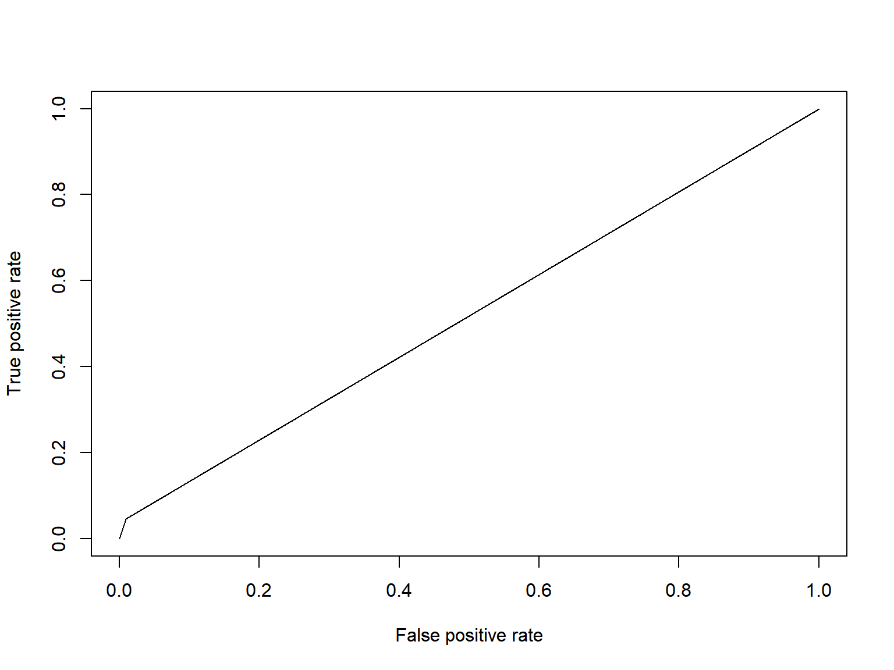
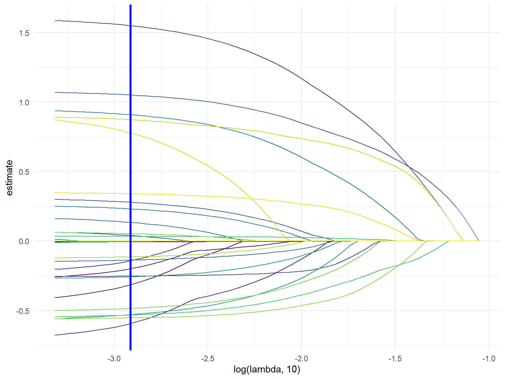
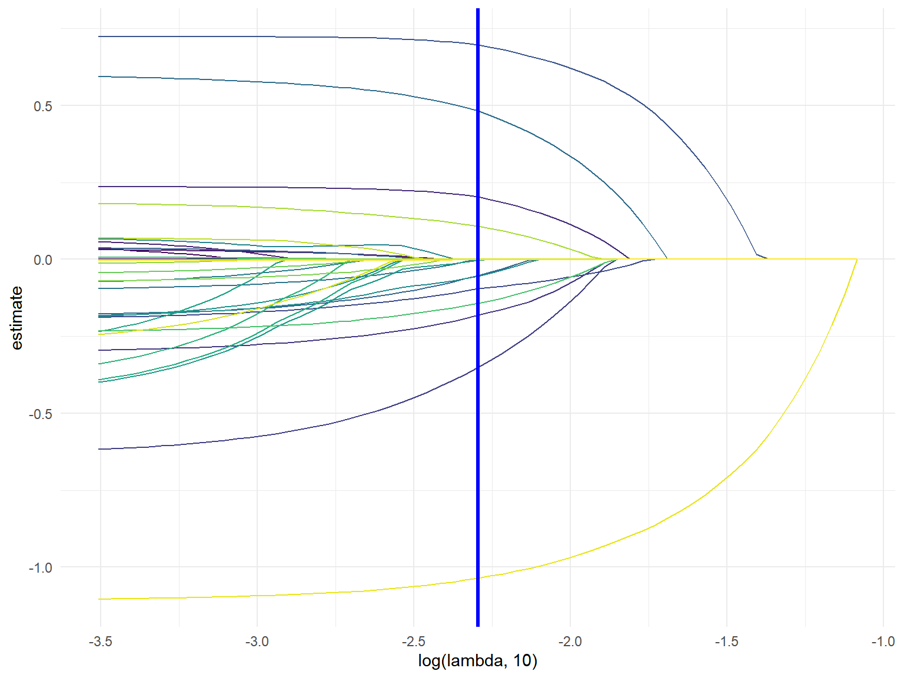
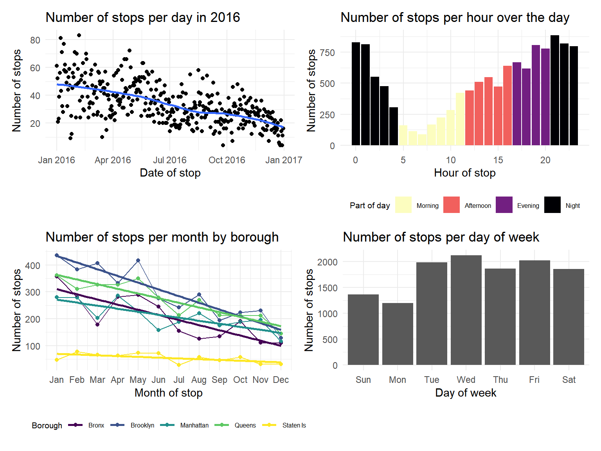

Terry Stop is a crime-preventing program that has been used by the police around the country for more than 40 years. In New York City this program is known as stop-and-frisk and consists of possible temporary detention and questioning of an individual with possible searching for weapons or other contraband. During Michael Bloomberg’s tenure as mayor of the City of New York, this program became increasingly aggressive and subsequently turned out to be the hot topic of discussion throughout the nation. In 2011 stop-and-frisk reached almost 700,000 stops. During the same year the New York Civil Liberties Union successfully sued the New York Police Department and forced it to regularly report to the public all stop-and-frisk related activities. From the obtained data, it was concluded that majority of stopped individuals were black and Hispanic men. Bloomberg and then NYC Police Commissioner Raymond W. Kelly, were accused of racial profiling.
Stop-and-frisk has been proven to be unsuccessful in identifying criminals and recovering illegal weapons. For years Bloomberg argued that there is a causal relationship between stop-and-frisk and crime rates in NYC, in order to rally support for the program. This assumption has been proven to be incorrect by the fact that even after the program was scaled back, crime rates continued to decline in NYC. During mayoral election campaign in 2013, public pressure forced Bloomberg to cut back on this practice.
After Bill de Blasio won mayoral election in 2013, he continued to downsize the program. In 2016 the number of stops were less than 2% in comparison to that of 2011, when the stops reached its peak. In spite of expectations, crime prevalence continued to decline even after the program was decreased by 98%.
We are interested in determining if there is a predictive nature to this dataset. We also want to describe the scope of the dataset through visualizations of the different demographics present and create a map of stops across the five boroughs. Specifically, we strive to answer the following questions:
Our dataset is from the New York Police Department and was obtained through the NYC Open Data resource. It contains data from 12,404 stops that occurred during 2016. The original dataset contained 112 variables, however to narrow our focus, the dataset was reduced down to 45 categorical, binary, and numerical variables that describe each stop and are relevant to the questions at hand. The data cleaning and tidying process recoded variables, implemented understandable variable names, and converted categorical variables to factors and binary variables into ‘0’ and ‘1’ within R. The outcome variables that we are interested in building models for are FRISKED and ARST_MADE. These variables are binary in nature and describe whether the stopped individual was frisked and/or arrested.
The data used in our analysis was read in from the NYPD portion of nyc.gov data. After reading in the data, we selected a subset of variables that we would use for further analysis. Then initial cleaning steps converted variables to their appropriate data type and renamed variables for clarity. We decided to convert age = 1, weight = 999, and weight = 1 to NA because these values are highly unlikely and may have been entered in error or used to represent missing values. To obtain a dataset that could be used in LASSO and modeling logistic regression, several categorical variables with levels that had representation of less than 2% were regrouped into ‘other’ to ensure that both the testing and training dataset have individuals represented from all categorical levels. This included regrouping levels within the variables build, race, hair color, and eye color.
# Read in data
stop_frisk_df =
# Read in data from internet
GET("https://www1.nyc.gov/assets/nypd/downloads/excel/analysis_and_planning/stop-question-frisk/sqf-2016.csv") %>%
content("parsed") %>%
# Clean and fix names of columns
janitor::clean_names() %>%
rename(
precinct = pct,
date_stop = datestop,
time_stop = timestop,
stop_in_out = inout,
obs_time_min = perobs,
stop_time_min = perstop,
arst_made = arstmade,
off_in_unif = offunif,
hair_col = haircolr,
eye_col = eyecolor,
other_feature = othfeatr,
boro = city
) %>%
mutate(
# Change values to missing
weight = ifelse(weight == 999, NA, weight),
age = ifelse(age == 1, NA, age),
weight = ifelse(weight == 1, NA, weight),
# Combine height columns
height_inch = ht_feet * 12 + ht_inch,
# Convert date to proper format
date_stop = mdy(date_stop),
# Convert time to proper format
time_stop = hm(time_stop / 100),
# Recode to be more informative
stop_in_out = recode(stop_in_out, "I" = "inside", "O" = "outside"),
race = recode(
race,
"A" = "other",
"B" = "black",
"I" = "other",
"P" = "black-hispanic",
"Q" = "white-hispanic",
"W" = "white",
"U" = "other",
"Z" = "other"
),
hair_col = recode(
hair_col,
"BA" = "bald",
"BK" = "black",
"BL" = "blond",
"BR" = "brown",
"DY" = "other",
"FR" = "other",
"GY" = "other",
"RA" = "other",
"SN" = "other",
"SP" = "other",
"WH" = "other",
"XX" = "other",
"ZZ" = "other",
),
eye_col = recode(
eye_col,
"BK" = "black",
"BL" = "blue",
"BR" = "brown",
"DF" = "other",
"GR" = "other",
"GY" = "other",
"HA" = "other",
"MA" = "other",
"PK" = "other",
"VI" = "other",
"XX" = "other",
"Z" = "other",
),
build = recode(
build,
"H" = "heavy",
"M" = "medium",
"T" = "thin",
"U" = "other",
"Z" = "unknown"
),
# change boro columns to lowercase for consistency
boro = tolower(boro),
# change character datatypes to numeric
age = as.numeric(age),
obs_time_min = as.numeric(obs_time_min),
stop_time_min = as.numeric(stop_time_min)
) %>%
# select columns for further analysis
select(precinct, date_stop, time_stop, stop_in_out, obs_time_min, stop_time_min, arst_made, off_in_unif, frisked,
searched, rf_vcrim, rf_othsw, rf_attir:ac_evasv, cs_furtv:cs_other, rf_knowl, sb_hdobj:sb_admis, rf_furt,
rf_bulg, sex, race, age, height_inch, weight:build, boro, xcoord, ycoord) %>%
# change all columns that have Y/N to 1/0
mutate_at(vars(arst_made:rf_bulg), funs(recode(., "Y" = "1", "N" = "0"))) %>%
# change binary columns to numeric instead of character
mutate_at(vars(arst_made:rf_bulg), funs(as.numeric(.))) %>%
# converts all character variables to factors (this does the same as the for loop)
mutate_if(is.character, as.factor) %>%
# remove the single row of NAs
filter(
!is.na(build)
)The 12404 reported stops in 2016 were spread unevenly amongst the different races with black being the leading race over 50%, white-hispanic about 20%, and white, other and black-hispanic being under 10%. Of those 12404 reported stops 7939 individuals were frisked, and 2643 individuals were arrested. The most frequently frisked and arrested race was black. Of the 12404 reported stops, 11450 individuals were male, 896 female, and 58 unknown.
The age of the stopped individuals ranges from 2 to 99, with equal age distribution among the sexes. Over 50% of stopped individuals were between 18 and 30 years old. Most stops occurred in Brooklyn (30%) and Queens (26%). The 4 leading reasons for stops were identified to be “fits a relevant description”, “furtive movements”, “other” and “casing a victim or location.”
# Percent innocent for each race category
percent_innocent = function(x) {
stop_frisk_df %>%
filter(
#age < 18,
race == x) %>%
group_by(race, arst_made) %>%
count() %>%
pivot_wider(
names_from = arst_made,
values_from = n) %>%
rename(
innocent = `0`,
arrested = `1`) %>%
mutate(
percentage = (innocent/(innocent + arrested)) *100)
}
output = map_df(stop_frisk_df$race, percent_innocent) %>%
distinct(race, percentage)
output %>%
ungroup(race) %>%
mutate(
race = fct_relevel(race, c("white", "black", "other", "white-hispanic")),
race = recode(race,
"white" = "White",
"black" = "Black",
"other" = "Other",
"white-hispanic" = "White-Hispanic",
"black-hispanic" = "Black-Hispanic")
) %>%
plot_ly(x = ~race, y = ~percentage, type = "bar", color = ~race) %>%
layout(
title = 'Percent innocent Minors among each race category',
xaxis = list(
type = 'category',
title = 'Race'),
yaxis = list(
title = 'Percent innocent, %',
range = c(0, 100)
)
)Goal: To select for models that will best answer the following questions:
Methods:
Only variables that preceded the individual being stopped were used in logistic regression models. Thus, all variables that described reason for frisk or reason for search were omitted. We focused on the characteristics, demographics, location, and reasons for stopping in the model. To build models for ARST_MADE and FRISKED, we evaluated GVIF to verify that there is no multicollinearity present and removed any variables suspected of having high collinearity. Model selection was based on consideration of AIC values, inflated standard errors, and p values. When AIC values did not change between models, ANOVA was used to compare similar models to determine whether the larger or smaller model was significantly better. Above all, we wanted to keep the concept of parsimony in mind when selecting models and minimize overfitting. Finally, the models were evaluated using a training and testing dataset to assess the predictive ability of the model using Area Under the Curve (AUC).
FRISKED Model:
set.seed(1)
train = sample_frac(stop_frisk_df, size = 0.8)
test = anti_join(stop_frisk_df, train)
model_1 = glm(frisked ~ sex + race + age + height_inch + weight + hair_col + eye_col + boro + build + stop_in_out + precinct + off_in_unif + cs_objcs + cs_descr + cs_casng + cs_lkout + cs_cloth + cs_drgtr + cs_furtv + cs_vcrim+ cs_bulge + cs_other, family = binomial, data = train)
car::vif(model_1)
# Based on the GVIF, we will remove boro
model_2 = glm(frisked ~ sex + race + age + height_inch + weight + hair_col + eye_col + build + stop_in_out + precinct + off_in_unif + cs_objcs + cs_descr + cs_casng + cs_lkout + cs_cloth + cs_drgtr + cs_furtv + cs_vcrim+ cs_bulge + cs_other, family = binomial, data = train)
car::vif(model_2)
# no more collinearity problems
summary(model_2)
# Remove hair and eye color because all categories within them are highly unsignificant, cs_drgtr, cs_lkout
model_3 = glm(frisked ~ sex + race + age + height_inch + weight + build + stop_in_out + precinct + off_in_unif + cs_objcs + cs_descr + cs_casng + cs_cloth + cs_furtv + cs_vcrim+ cs_bulge + cs_other, family = binomial, data = train, na.action = na.omit)
summary(model_3)
# remove weight, cs_cloth, cs_objcs
model_4 = glm(frisked ~ sex + race + age + height_inch + build + stop_in_out + precinct + off_in_unif + cs_descr + cs_casng + cs_furtv + cs_vcrim+ cs_bulge + cs_other, family = binomial, data = train)
summary(model_4)
log_pred = predict(model_4, newdata = test, type = "response")
log_pred = ifelse(log_pred > 0.5, 1, 0)
library(ROCR)
library(Metrics)
pr = prediction(log_pred, test$frisked)
perf = performance(pr, measure = "tpr", x.measure = "fpr")
auc(test$frisked, log_pred)
log_pred = ifelse(log_pred == 1, "Predicted Frisk", "Predicted No Frisk")Utilizing the methods above, the logistic regression model that was determined to have the best predictive ability included the variables: sex, race, age, height, build, stop inside/outside, officer in uniform, precinct, reason for stop - fits a relevant description, casing a victim or location, furtive movements, violent crime suspected, suspicious bulge, and other. With this model, the predictive power was 0.564. This value is only slightly better than guessing (0.50).
FRISKED AUC Curve
plot(perf)
Confusion Matrix: Predicted Frisked Status vs True Frisked Status
#confusion matrix
table(pred = log_pred, true = test$frisked) %>% knitr::kable(col.names = c("No Frisk", "Frisk"))| No Frisk | Frisk | |
|---|---|---|
| Predicted Frisk | 634 | 1395 |
| Predicted No Frisk | 224 | 193 |
ARST_MADE Model:
model_5 = glm(arst_made ~ sex + race + age + height_inch + weight + hair_col + eye_col + boro + build + stop_in_out + precinct + off_in_unif + cs_objcs + cs_descr + cs_casng + cs_lkout + cs_cloth + cs_drgtr + cs_furtv + cs_vcrim+ cs_bulge + cs_other, data = train)
summary(model_5)
car::vif(model_5)
# remove eye color and build, remove boro due to correlation
model_6 = glm(arst_made ~ sex + race + age + height_inch + weight + hair_col + stop_in_out + precinct + off_in_unif + cs_objcs + cs_descr + cs_casng + cs_lkout + cs_cloth + cs_drgtr + cs_furtv + cs_vcrim+ cs_bulge + cs_other, family = binomial, data = train)
summary(model_6)
# remove height, precinct, age
model_7 = glm(arst_made ~ sex + race + weight + hair_col + stop_in_out + age + off_in_unif + cs_objcs + cs_descr + cs_casng + cs_lkout + cs_cloth + cs_drgtr + cs_furtv + cs_vcrim+ cs_bulge + cs_other, family = binomial, data = train)
summary(model_7)
# remove insignificant reasons for stop cs_furtv, cs_vcrim, cs_other, cx_bulge, cs_furtv, cs_lkout, and sex
model_8 = glm(arst_made ~ race + weight + hair_col + stop_in_out + off_in_unif + cs_objcs + cs_descr + cs_casng + cs_cloth + cs_drgtr, family = binomial, data = train)
summary(model_8)
log_pred = predict(model_8, newdata = test, type = "response")
log_pred = ifelse(log_pred > 0.5, 1, 0)
pr = prediction(log_pred, test$arst_made)
perf = performance(pr, measure = "tpr", x.measure = "fpr")
auc(test$arst_made, log_pred)
log_pred = ifelse(log_pred == 1, "Predicted Arrest", "Predicted No Arrest")The logistic regression model that was determined to have the best predictive ability included the variables: race, weight, hair color, stop inside/outside, whether the officer was in uniform, and five reasons for stop variables. This model only performed slightly better than taking a random guess, with an AUC value of 0.515. Based on the confusion matrix, the model is biased to predicting that the individual will not be arrested.
ARST_MADE AUC Curve
plot(perf)
Confusion Matrix: Predicted Arrest Status vs True Arrest Status
table(pred = log_pred, true = test$arst_made) %>% knitr::kable(col.names = c("No Arrest", "Arrest"))| No Arrest | Arrest | |
|---|---|---|
| Predicted Arrest | 17 | 24 |
| Predicted No Arrest | 1907 | 504 |
LASSO regression was used to determine if machine learning could build a model that can make better predictions. Observations with missing data were removed, testing and training datasets were created, and cross validation was used to select the best model using the LASSO procedure. A matrix dataset was used to create dummy variables for all categorical variables, resulting in 33 variables. The lasso procedure for the FRISKED model kept 16 variables in the model and minimized 17 variables. Some important varialbes that LASSO kept in the model was sex = male, stop inside/outside, and officer in uniform. The AUC value was 0.444, which was less than the value selected from our logistic modeling, and is not a desired value for AUC, falling below 0.50, indicating the model is worse than taking a guess. LASSO regression for the arrest made model selected only 2 of the 33 variables (stop inside/outside and reason for stop: action indicative of drug transaction) and minimized the others to 0. The resulting AUC value was 0.413, which was significantly worse predictions compared to the logistic model from above. This is not surprising given that the model only selected for 2 variables. To develop our confusion matrix, because arrests were a small portion of our dataset, we lowered the “positive” prediction value to 0.3, compared to the traditional 0.5. This yielded a better values in our confusion matrix.
library(glmnet)
set.seed(1)
# keeping only variables we want to use with frisked logistic prediction
stop_frisk_lasso = stop_frisk_df %>% select(frisked, sex, race, age, height_inch, weight, hair_col, eye_col, build, stop_in_out, precinct, off_in_unif, cs_objcs, cs_descr, cs_casng, cs_lkout, cs_cloth, cs_drgtr, cs_furtv, cs_vcrim, cs_bulge, cs_other)
stop_frisk_lasso = stop_frisk_lasso[complete.cases(stop_frisk_lasso), ]
# create test and train datasets
train_lasso = sample_frac(stop_frisk_lasso, size = 0.5)
test_lasso = anti_join(stop_frisk_lasso, train_lasso)
# creating x and y
x = model.matrix(frisked ~ ., train_lasso)[,-1]
y = train_lasso$frisked
# lasso fit
lasso_fit = glmnet(x, y, family = "binomial")
# cross validation
lasso_cv = cv.glmnet(x, y, family = "binomial", type = "mse")
lambda_opt = lasso_cv$lambda.min#min value of lambda
lambda_min <- lasso_cv$lambda.min
#best value of lambda
lambda_1se <- lasso_cv$lambda.1se
#regression coefficients
coef(lasso_cv, s = lambda_1se)
#get test data
x_test <- model.matrix(frisked ~ ., test_lasso)
x_test = x_test[,-1]
#predict class, type=”class”
lasso_prob <- predict(lasso_cv, newx = x_test, s = lambda_1se, type = "response")
#translate probabilities to predictions
lasso_predict <- rep("Pred No Frisk", nrow(test_lasso))
lasso_predict[lasso_prob > 0.5] <- "Pred Frisk"
auc(test_lasso$frisked, lasso_predict)Visualizing Best Lambda
# visualizing best lambda
broom::tidy(lasso_fit) %>%
select(term, lambda, estimate) %>%
complete(term, lambda, fill = list(estimate = 0) ) %>%
filter(term != "(Intercept)") %>%
ggplot(aes(x = log(lambda, 10), y = estimate, group = term, color = term)) +
geom_path() +
geom_vline(xintercept = log(lambda_opt, 10), color = "blue", size = 1.2) +
theme(legend.position = "none")
Confusion Matrix: Predicted Frisked Status vs True Frisked Status
#confusion matrix
table(pred = lasso_predict, true = test_lasso$frisked) %>% knitr::kable(col.names = c("No Frisk", "Frisk"))| No Frisk | Frisk | |
|---|---|---|
| Pred Frisk | 1823 | 3629 |
| Pred No Frisk | 399 | 268 |
set.seed(1)
# keeping only variables we want to use with frisked logistic prediction
stop_frisk_lasso_arst = stop_frisk_df %>% select(arst_made, sex, race, age, height_inch, weight, hair_col, eye_col, build, stop_in_out, precinct, off_in_unif, cs_objcs, cs_descr, cs_casng, cs_lkout, cs_cloth, cs_drgtr, cs_furtv, cs_vcrim, cs_bulge, cs_other)
# getting rid of incomplete observations
stop_frisk_lasso_arst = stop_frisk_lasso_arst[complete.cases(stop_frisk_lasso_arst), ]
# create test and train datasets
train_lasso_arst = sample_frac(stop_frisk_lasso_arst, size = 0.5)
test_lasso_arst = anti_join(stop_frisk_lasso_arst, train_lasso_arst)
# creating x and y
x = model.matrix(arst_made ~ ., train_lasso_arst)[,-1]
y = train_lasso_arst$arst_made
# lasso fit
lasso_fit = glmnet(x, y, family = "binomial")
# cross validation
lasso_cv = cv.glmnet(x, y, family = "binomial", type = "mse")
lambda_opt = lasso_cv$lambda.min
# # visualizing best lambda
broom::tidy(lasso_fit) %>%
select(term, lambda, estimate) %>%
complete(term, lambda, fill = list(estimate = 0) ) %>%
filter(term != "(Intercept)") %>%
ggplot(aes(x = log(lambda, 10), y = estimate, group = term, color = term)) +
geom_path() +
geom_vline(xintercept = log(lambda_opt, 10), color = "blue", size = 1.2) +
theme(legend.position = "none")
# coefficients from the optimal model
lasso_fit = glmnet(x, y, lambda = lambda_opt)
lasso_fit %>% broom::tidy()
#min value of lambda
lambda_min <- lasso_cv$lambda.min
#best value of lambda
lambda_1se <- lasso_cv$lambda.1se
#regression coefficients
coef(lasso_cv, s = lambda_1se)
#get test data
x_test <- model.matrix(arst_made ~ ., data = test_lasso_arst)
x_test = x_test[,-1]
#predict class, type=”class”
lasso_prob <- predict(lasso_cv, newx = x_test, s = lambda_1se, type = "response")
#translate probabilities to predictions
lasso_predict <- rep("Predicted No Arrest", nrow(test_lasso_arst))
lasso_predict[lasso_prob > 0.30] <- "Predicted Arrest"
#confusion matrix
table(pred = lasso_predict, true = test_lasso_arst$arst_made)
auc(test_lasso_arst$arst_made, lasso_predict)Confusion Matrix: Predicted Arrested Status vs True Arrested Status
#confusion matrix
table(pred = lasso_predict, true = test_lasso_arst$arst_made) %>% knitr::kable(col.names = c("No Arrest", "Arrest"))| No Arrest | Arrest | |
|---|---|---|
| Predicted Arrest | 800 | 467 |
| Predicted No Arrest | 3951 | 899 |
Additional analysis was performed for stopped individuals under age of 18.
under_18 = stop_frisk_df %>%
filter(age < '18')
# percent innocent and arrested amoung minors
under_18 %>%
count(arst_made) %>%
mutate(
percent = (n / nrow(under_18) * 100)
) %>%
knitr::kable(digits = 2)under_18 = stop_frisk_df %>%
filter(age < '18')
under_18 %>%
count(race) %>%
mutate(
race = fct_reorder(race, -n)) %>%
plot_ly(x = ~ race, y = ~ n, type = "bar", color = ~ race) %>%
layout(
title = 'Minors Stopped by Race',
xaxis = list(
type = 'category',
title = 'Race'),
yaxis = list(
title = 'Count',
range = c(0, 1100)
)
)14.59% of people who were stopped were underage of 18; out of those 154 were female, 1643 were male and 13 were identified as other. Most minors that were stopped were of race black with a total of 1036 stops.
# Number of stops per day
stops_per_day =
stop_frisk_df %>%
group_by(date_stop) %>%
summarize(
count = n()
) %>%
ggplot(aes(x = date_stop, y = count)) +
geom_point() +
geom_smooth(se = FALSE) +
labs(
title = "Number of stops per day in 2016",
x = "Date of stop",
y = "Number of stops"
)
# Number of stops per month (broken down by boro)
stops_per_month =
stop_frisk_df %>%
mutate(
month_stop = month(date_stop),
boro = str_to_title(boro)
) %>%
group_by(month_stop, boro) %>%
summarize(
count = n()
) %>%
ggplot(aes(x = month_stop, y = count, color = boro)) +
geom_point() +
geom_line() +
geom_smooth(se = FALSE, method = "lm") +
labs(
title = "Number of stops per month by borough",
x = "Month of stop",
y = "Number of stops",
color = "Borough"
) +
scale_x_continuous(
breaks = 1:12,
labels = c("Jan", "Feb", "Mar", "Apr", "May", "Jun", "Jul", "Aug", "Sep", "Oct", "Nov", "Dec")
) +
theme(
legend.title = element_text(size = 8),
legend.text = element_text(size = 6)
)
# Number of stops per hour over the day
stops_per_hour =
stop_frisk_df %>%
mutate(
hour_stop = hour(time_stop),
part_of_day = cut(hour_stop, breaks = c(0, 5, 12, 17, 21, 24), labels = c("Night", "Morning", "Afternoon", "Evening", "Night"), right = FALSE),
part_of_day = fct_relevel(part_of_day, "Morning", "Afternoon", "Evening")
) %>%
select(hour_stop, part_of_day) %>%
group_by(hour_stop, part_of_day) %>%
summarize(
count = n()
) %>%
ggplot(aes(x = hour_stop, y = count)) +
geom_bar(stat = "Identity", aes(fill = part_of_day)) +
labs(
title = "Number of stops per hour over the day",
x = "Hour of stop",
y = "Number of stops",
fill = "Part of day"
) +
theme(
legend.title = element_text(size = 8),
legend.text = element_text(size = 6)
) +
scale_fill_viridis_d(direction = -1, option = "magma")
# Number of stops per day of week
stops_per_dow = stop_frisk_df %>%
mutate(
dow_stop = wday(date_stop, label = TRUE)
) %>%
group_by(dow_stop) %>%
summarize(
count = n()
) %>%
ggplot(aes(x = dow_stop, y = count)) +
geom_bar(stat = "Identity") +
labs(
title = "Number of stops per day of week",
x = "Day of week",
y = "Number of stops"
) +
theme(legend.position = "none")
(stops_per_day + stops_per_hour) / (stops_per_month + stops_per_dow)
We also conducted analysis to explore the trends in stops over time and by borough in NYC. We discovered that the number of stops steadily decreased through 2016. Also, most boroughs in NYC have a similar trend and number of stops, except for Staten Island, which had a steady smaller number of stops. Additionally, the frequency of stops is less in the morning and higher towards the evening/night. Finally, we looked at the number of stops by the day of the week and discovered that less stops occur on Sunday and Monday than the other days of the week.
reasons =
stop_frisk_df %>%
select(cs_objcs:cs_lkout, cs_cloth, cs_drgtr, cs_furtv, cs_vcrim:cs_other, frisked) %>%
pivot_longer(
cs_objcs:cs_other,
names_to = "reason_stopped",
values_to = "stops"
) %>%
mutate(
reason_stopped = recode(
reason_stopped,
"cs_objcs" = "carrying suspicious object",
"cs_descr" = "fits a relevant description",
"cs_casng" = "casing a victim or location",
"cs_lkout" = "suspect acting as a lookout",
"cs_cloth" = "wearing clothes commonly used in crimes",
"cs_drgtr" = "actions indicative of drug transaction",
"cs_furtv" = "furtive movements",
"cs_vcrim" = "actions engaging in violent crime",
"cs_bulge" = "suspicious bulge",
"cs_other" = "other"
)) %>%
filter(stops == 1) %>%
group_by(reason_stopped) %>%
summarize(total =n())
plot_ly(x = ~reason_stopped, y= ~total, type = "bar" , color = ~reason_stopped, colors = "Set1", data = reasons) %>%
layout(
xaxis = list(
title = 'Reasons Stopped'),
yaxis = list(
title = 'Total'))fits_desc = reasons%>%
filter(reason_stopped == "fits a relevant description")
other = reasons %>%
filter(reason_stopped == "other")
clothes =
reasons %>%
filter(reason_stopped == "wearing clothes commonly used in crimes")
object =
reasons %>%
filter(reason_stopped == "carrying suspicious object")We conducted analysis over different reasons why individuals were stopped. There are 10 different categories of reasons which are actions engaging in violent crime, actions indicative of drug transaction, carrying suspicious object, casing a victim or location, fits a relevant description, furtive movements, other, suspect acting as a lookout, suspicious bulge, wearing clothes commonly used in crimes Amongst these different reasons “fits a relevant description” had a total of 5870, falling close behind was other with a total of 5378, and the reasons with the least amount of 402 was wearing clothes commonly used in crimes and the amount of 365 was carrying a suspicious object.
The models created for FRISKED and ARST_MADE were not very successful at predicting who would be frisked or arrested. The logistic models were only slightly more successful at predicting whether or not the person would be frisked or arrested compared to taking a guess. While our goal was to develop a predictive model, this model shows that the given variables are not helpful in determining whether or not the individual will be frisked or arrested. The decision will most likely include other unknown factors that influence the stop that are not able to be recorded. After the tactic came under scrutiny, the NYPD is taking measures to ensure that the policy is non-discriminant. However, as is described under the demographics analysis section, those that are stopped in the first place tend to be non-white race.
Machine learning did not improve our predictive modeling. This may be due to the fact that many of the variables need a greater understanding of the topic before making a decision to remove it from the model or not. For arrest made model, it did not predict any probability of being arrested greater than 0.50. This is due to the fact that only 0.2130764% of individuals from the dataset were arrested. This problem was anticipated to be nullified by splitting the dataset 50/50 to make sure there were enough arrest observations in both the testing and the training dataset, however this was not the case. To create better predictions for the arrest made confusion matrix, we lowered the “positive” probability cut off to be 0.30 instead of 0.50.
Looking at the trends in stop frequency across time raise some interesting questions to be explored in future analysis. For example, why did the number of stops decrease across 2016? Are there policy changes causing the shift? Pushback from the general public? It was unsurprising to find that Staten Island had the least number of stops because they have the smallest population of all five boroughs. Looking at the frequency of stops by day of the week and hour of the day reveal some interesting trends that could be explored further by looking at data to understand when the most crimes are committed or when the NYPD has the most officers on duty.
After thorough analysis of the data, the total count of reasons for being stopped for each category was greater than the dataset. It was discovered that a single stop could contain multiple ‘reasons for stop’. Considering this, our analysis of the different reasons for stop could be misleading. This could explain why the “other” category is among the highest. For future analysis we could look only at people who were stopped for multiple reasons and just look at the people who were stopped for only one reason separately just so we could get a more feasible count of each category of reasons for stop. Our data also had a concerning distribution in age, ranging from 1 to 99 years, and weight, ranging from 1 to 999 pounds. While it is difficult to question the validity of specific entries in the dataset, there were certain extreme entries that we felt confident in removing, for example weight = 999 or age = 1.
Innocent individuals were determined to be those who were not arrested, after being stopped. It was calculated that the percent innocent within each race is approximately equally distributed among the races and is around 80%.
Looking at the distribution of stops, frisks or searches, and arrests by precinct of all NYC, one can see that there is a slight trend where areas with higher amounts of stops and frisks also have higher amounts of arrests. However, when isolating individual boroughs (specifically the Bronx and Brooklyn), one can see that this trend starts to break down. Analyzing the reason for stopping shows that every precinct’s most frequent rationale for stopping is either “fits a relevant description”, or “other” – which is consistent with our analysis of the overall data. Finally, when analyzing which race makes up the greatest percentage of stops in each precinct, a majority of precincts stop either black or white-Hispanic individuals. This is especially surprising considering that in many neighborhoods that do not have a historically high number of people of color, they nevertheless make up a majority of the stops in those general areas (i.e. Financial District, Battery Park, Midtown, Hell’s Kitchen, etc.). This further suggests possible racial profiling in conducting stops by the NYPD.